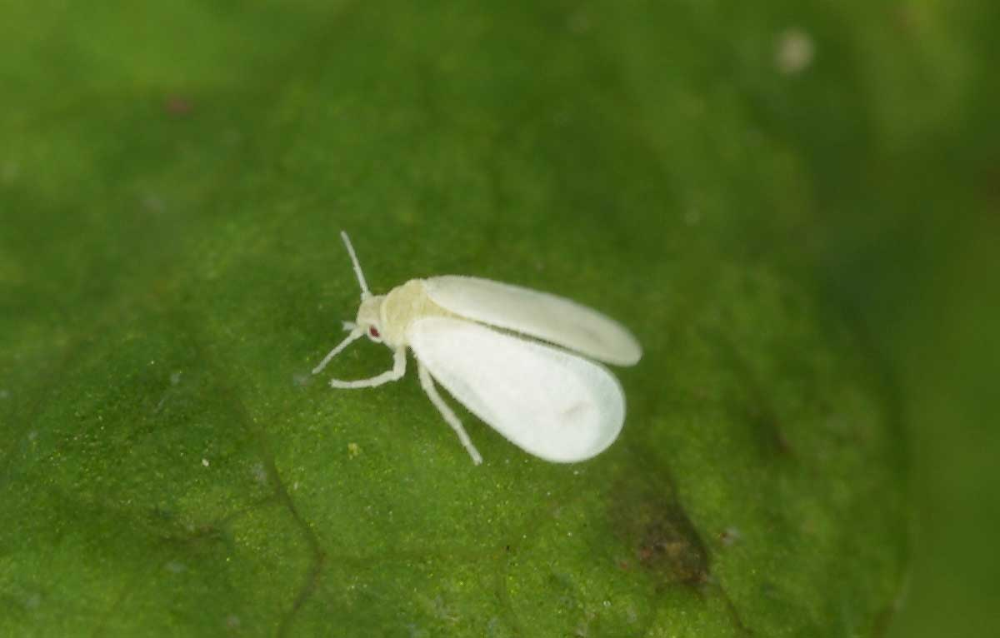

Contents
Common Houseplants
- Begonia Maculata - Polka Dot Begonia
- Chlorophytum Comosum - Spider Plant
- Epipremnum Aureum - Golden Pothos
- Monstera Adansonii - Swiss Cheese Vine
- Monstera Deliciosa - Swiss Cheese Plant
- Monstera Deliciosa 'Borsigiana Variegata' - Variegated Swiss Cheese Plant
- Philodendron Gloriosum - Philodendron 'Glorious'
Begonia Maculata - Polka Dot Begonia
Care Level: novice
Light: bright, indirect
Water: moderate
Soil: well-draining
Humidity: medium
Propogation: leaf cuttings + division
Growth Habit: upright
Position: tabletop
Toxicity: toxic
Chlorophytum Comosum - Spider Plant
Care Level: novice
Light: low-moderate
Water: moderate
Soil: well-draining
Humidity: medium
Propogation: plantlets + offsets
Growth Habit: clumping + trailing
Position: bookshelf or stand
Toxicity: pet friendly
Epipremnum Aureum - Golden Pothos
Care Level: novice
Light: low-moderate
Water: moderate
Soil: well-draining
Humidity: low
Propogation: stem cuttings
Growth Habit: trailing
Position: bookshelf or stand
Toxicity: toxic
Monstera Adansonii - Swiss Cheese Vine
Care Level: green thumb
Light: bright, indirect
Water: moderate-high
Soil: well-draining
Humidity: high
Propogation: stem cuttings
Growth Habit: climbing + trailing
Position: bookshelf or stand
Toxicity: toxic
Monstera Deliciosa - Swiss Cheese Plant
Care Level: novice
Light: bright, indirect
Water: moderate
Soil: well-draining
Humidity: medium
Propogation: stem cuttings
Growth Habit: climbing
Position: floor + stand
Toxicity: toxic
Monstera Deliciosa 'Borsigiana Variegata' - Variegated Swiss Cheese Plant
Care Level: green thumb
Light: bright, indirect
Water: moderate
Soil: well-draining
Humidity: high
Propogation: stem cuttings
Growth Habit: climbing
Position: floor
Toxicity: toxic
Philodendron Gloriosum - Philodendron 'Glorious'
Care Level: green thumb
Light: bright, indirect
Water: high
Soil: well-draining
Humidity: high
Propogation: stem cuttings
Growth Habit: climbing
Position: bookshelf or stand
Toxicity: toxic

Pests & Diseases
Aphids
Small, soft-bodied, wingless insects that come in various colours. They reproduce rapidly and attack plants in clusters by sucking sap from the leaves and stems, causing physical damage and a metabolic imbalance. Outdoors, ladybugs are often used to manage aphids, but indoors use soapy water to wash the leaves and then apply eco-oil or vegetable oil.
Fungus Gnats
Small flies that lay their eggs in potting mix. You may notice them running across the soil and leaves and crawling around on your windows. They are mainly just a nuisance as they do little damage. Make sure the affected plant is not over-watered and allow the top 5 cm of soil to dry out. Use either sticky cards or a mixture of apple cider vinegar and dishwashing liquid (250 ml vinegar and a few drops of dishwashing liquid) in a shallow dish to attract and trap these pesky gnats.
Mealybugs
These bugs are not your friends. They are small insects coated in a white powdery wax that appear as small cotton wool-like clumps. They suck sap from leaves and excrete a sticky residue. They're often a little difficult to find as they're rather good at hiding, so be sure to check any new growth, plant joints, and under leaves - basically and nooks and crannies on your plant. They thrive in over-fertilised, nitrogen-rich potting mix, so go easy there, solider! It's best to use a balanced NPK (nitrogen-phosphorus-potassium) fertiliser on indoor plants to help keep nitrogen levels in check. To rid yourself of these little critters, physically remove them with a cloth, making sure they're squashed and not just displaced. Once you've removed all traces of them, spray the leaves (top and bottom), stems, and potting mix with a mixture of one part vegetable oil and a dash of dishwashing liquid to 20 parts water (this mixture works great for scale too; see below). Repeat this spritz weekly for several weeks to ensure that all the bugs are gone.
Scale
Classified as either hard or soft, referring to the scales or 'outer shells' they exhibit, these flat - or oval - shaped slow-moving insects come in a variety of colours. Similar to mealybugs, scale suck plant juices and secrete honeydew, causing yellow, dropping leaves. Ants are a telltale sign that scale are nearby, as they love feeding on the sweet nectar. Rub off the scale with an old toothbrush or nail brush and then apple eco-oil. Wipe both sides of the leaves to smother any stragglers and remove any baby crawlers.

Spider Mites
These teeny-tiny critters aren't actually true spiders, but rather members of the mite family. They are identified by small yellow or white dots or speckled patches, often found on the undersides of leaves. In cases of infestation, fine webbing may be visible. These little insects suck the life out of your plant so it's important to get on top of them quickly. Remove any badly infected leaves and discard them carefully so the mites can't find their way back or infect other plants. Wipe of shower down your plant, targeting the undersides of the leaves to remove any remaining mites. Spray the leaves with eco-oil to prevent any further outbreaks.
Thrips
These slender, winged insects are becoming an increasing issue for indoor gardeners. They suck the sap out of your plants and cause white - or silver - streaked damage, resulting in silver or brown leaves. You might also notice contorted growth and small brown fecal spots. Thips can move from plant to plant pretty quickly, so it's best to tackle these pests as soon as you find them. Wipe or shower the leaves and then apply some eco-oil or vegetable oil to the leaves, stems, and potting mix.
Whiteflies
Closely related to aphids, whiteflies look like delicate mini moths or flies. Adult whiteflies, along with their eggs, are often hidden on the undersides of leaves; if disturbed the adults often flutter off in a cloud. Like scale, they feed on a plant's juice and excrete honeydew causing stunted growth and yellow leaves. Whiteflies thrive in warm, humid environments, so if you live in a cooler climate you shouldn't have too much to worry about. To control whiteflies, gently vacuum them up or hose the insects away, before spraying the plant with eco-oil.
Bacteria + Viruses
These issues are usually caused by improper plant care. The most common cause are over - or under - watering, isufficient airflow, physical damage caused by ripping dead stems rather than cutting, and reusing old potting mix and dirty pots. Once established, bacteria and viruses can spread from plant to plant. They can stunt growth and distort plant growth and cause leaves to become discoloured or damaged. Generally, it is best to cut your losses and properly dispose of the plant before it infects others.
Fungi
Thriving in damp environments, fungi can cause root and stem rot, mildew, and leaf spots. It can be pretty tricky to eliminate so, once again, prevention is key. Air circulation is your friend here, so regularly open those windows, turn on a fan, and always allow the leaves and top layer of soil to try out between watering. To treat fungi, isolate the plant, immediately apply an eco-fungicide, and repeat as directed.